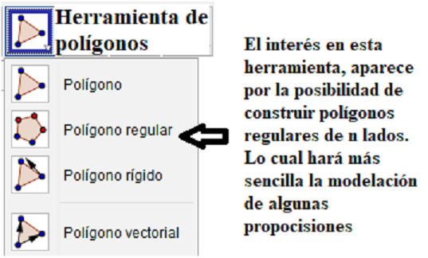
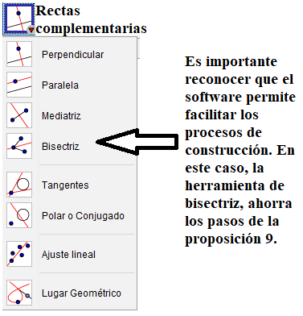
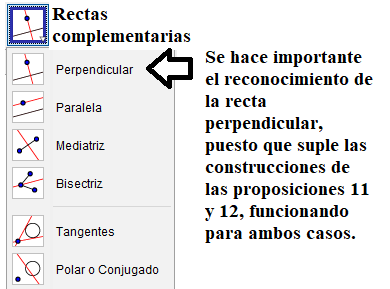

Nociones básicas de la geometría euclideana
Los siguientes apartados, se hará la presentación del primer
libro de los elementos de Euclides, el cual se cosidera como un
elemento vital para la enseñanza y aprendizaje de la geometría.
Se parte de la presentación de las 23 definiciones, los 5 postulados y
las 5 nociones comunes. Siendo estos elementos, aquellos que
fundamentan y estructuran las demostraciones de las 48 proposiciones,
las cuales se verán en el desarrollo del sitio web,
ofreciendo además, la posibilidad de acceder a las construcciones
ilustradas en GeoGebra, con su respectivo protocolo de construcción.
Finalmente, se presentan algunos ejercicios para la interacción
del estudiante, con la intención de promover el razonamiento deductivo.
Antes de dar inicio al abordaje de los elementos del primer libro de Euclides, se
hará la presentación de un breve tutorial para el uso de las herramientas para
graficar en GeoGebra. En este momento, se hará una presentación básica, dando lugar
a la complejización de estos elementos durante el desarrollos del sitio.
Inicialmente, se recomienda tener en cuenta lo presentado en la siguiente imagen:

Se recomienda generar algunos espacios donde el estudiante pueda interactuar con el
software y así, facilitar los procesos posteriores. Las herramientas complementarias, se recomienda presentarlas luego del
trabajo con la proposición que la justifica, de modo que facilite la construcción de las proposiciones siguientes.
Definiciones
El primer libro de geometría eucliedeana, aparcen 23 definiciones.
Estas presentan los elementos que componen la geometría euclideana, además
de la clasificación de algunos elementos, tales como ángulos, triángulos y
cuadriláteros, elementos que se consideran fundamentales en la educación básica
primaria. Las definiciones son:
- Un punto es lo que no tiene partes.
- Una linea es una longitud sin anchura.
- Los extremos de una linea son puntos.
- Una linea recta es aquella que yace por igual respecto de
los puntos que están en ella.
- Una superficie es aquello que sólo tiene longitud y anchura.
- Los extremos de una superficie son lineas.
- Una superficie plana es aquella que yace por igual respecto de
las lineas que están en ella.
- Un ángulo plano es la inclinación mutua de dos líneas que se encuentran una
a otra en un plano y no están en línea recta.
- Cuando las líneas que comprenden el ángulo son rectas, el ángulo se llama rectilíneo.
- Cuando una línea recta que está sobre otra hace que los ángulos adyacentes
sean iguales, cada uno de los ángulos es recto, y la recta que está sobre
la otra se llama perpendicular a la otra recta.
- Un ángulo obtuso es un ángulo mayor que un ángulo recto.
- Un ángulo agudo es un ángulo menor que un ángulo recto.
- Un límite es lo que es extremo de algo.
- Una figura es aquello que está contenido por cualquier límite o límites.
- Un círculo es una figura plana comprendida por una sola línea (llamada circunferencia)
de tal modo que todas las rectas dibujadas que caen sobre ella desde un punto de los
que están dentro de la figura son iguales entre sí.
- Y el punto se llama centro del círculo.
- Un diámetro de un círculo es una recta cualquiera que pasa por el centro y que acaba en
ambas direcciones en la circunferencia del círculo; esta línea recta también divide el círculo en dos partes iguales.
- Un semicírculo es la figura comprendida entre el diámetro y la circunferencia cortada por él.
El centro del semicírculo es el mismo que el del círculo.
- Figuras rectilíneas son aquellas que están comprendidas por líneas rectas, triláteras las comprendidas por tres,
cuadriláteras las comprendidas por cuatro y multiláteras las comprendidas por más de cuatro líneas rectas.
- De los triángulos, el equilátero es el que tiene los tres lados iguales; isósceles el que tiene dos lados iguales
y uno de desigual; y escaleno el que tiene los tres lados desiguales.
- De los triángulos, triángulo rectángulo es el que tiene un ángulo recto, obtusángulo el que tiene un ángulo obtuso
y acutángulo el que tiene los tres ángulos agudos.
- De los cuadriláteros, cuadrado es el que tiene los lados iguales y los ángulos rectos; rectángulo el que es
rectangular pero no equilátero; rombo el que es equilátero, pero no tiene los ángulos rectos; y romboide el que
tiene los lados y los ángulos opuestos iguales, pero ni es equilátero ni tiene los ángulos rectos. Los otros
cuadriláteros se llaman trapecios.
- Rectas paralelas son aquellas que, estando en un mismo plano y siendo prolongadas indefinidamente en ambos sentidos,
no se encuentran una a otra en ninguno de ellos.
Postulados
Aparcen también 5 postulados, los cuales equivalen a los axiomas para la construcción de los teoremas del primer
libro de los elementos.
- Por dos puntos diferentes pasa una sola línea recta.
- Un segmento rectilíneo puede ser siempre alargado.
- Hay una sola circunferencia con un centro y un radio dados.
- Todos los ángulos rectos son iguales.
- Si una recta secante corta a dos rectas formando a un lado ángulos interiores, la suma de los cuales sea menor
que dos ángulos rectos; las dos rectas, suficientemente alargadas se cortarán en el mismo lado.
Antes de pasar a la presentación de las nociones comunes, se propone el siguiente ejercicio, buscando definir un elemento que al momento no se ha abordado claramente.
Ejercicio 1: Acceder al siguiente enlace y seguir las instrucciones:
Recurso interactivo 1.
Luego de realizar el primer ejercicio, es posible dar una definición clara de la circunferencia, como:
"El lugar geométrico compuesto por todos los puntos, que equidistan de un punto llamado centro (en el caso del ejercicio el punto A)"
Como se puede ver, el ejercicio y definición que se puede obtener del mismo, alcara las definiciones 15 y 16, referentes al círculo (figura limitada por la circunferencia).
Ejemplo ejercicio 1
Nociones comunes
- Cosas iguales a una tercera son iguales entre sí.
- Si a cosas iguales se añaden cosas iguales, los totales son iguales también.
- Si a cosas iguales se quitan cosas iguales, los restos son iguales también.
- Las cosas que coinciden entre sí son iguales entre sí.
- El todo es mayor que la parte.
Proposiciones
Para concluir con la presentación del primer libro y pasar a los ejercicios propuestos, se presentan las 48 proposiciones, cada una con la opción de acceder a un recurso en GeoGebra, donde el estudiante puede ver los pasos de la demostración, al tiempo que la recrea en el software. De modo que el estudiante se acostumbre al uso de estos elementos de la geometría (regla y compás) y se vayan familiarizando con el razonamiento que ofrecen estas demostraciones.
Proposición 1
Construir un triángulo equilátero sobre un segmento dado.
Recurso para la proposición 1.
En este punto se torna conveniente introducir una nueva herramienta de construcción, la cual evita los pasos de la proposición 1 y, ayuda a facilitar las demás construcciones al estudiante.
En esta herramienta, el estudiante tiene la posibilidad de construir polígonos regulares, dada la medida del lado:
Proposición 2
Dibujar en un punto dado un segmento igual a un segmento dado.
Recurso para la proposición 2.Proposición 3
Dados dos segmentos, uno mayor que el otro, construir sobre el mayor un segmento igual al menor.
Recurso para la proposición 3.Proposición 4
Si dos triángulos tienen dos lados respectivos iguales, y tienen los ángulos comprendidos iguales, entonces también tendrán las bases iguales, los triángulos serán iguales, y los ángulos restantes serán iguales, concretamente los opuestos a los lados iguales.
Recurso para la proposición 4.
Criterio de igualdad Lado, ángulo, lado (LAL)Proposición 5
En triángulos isósceles los ángulos en la base son iguales y, si los lados iguales se alargan, los ángulos situados bajo la base serán iguales entre sí.
Recurso para la proposición 5.Proposición 6
Si en un triángulo dos ángulos son iguales, entonces los lados opuestos a los ángulos iguales también son iguales uno al otro.
En este caso, dado que la demostración se hace por reducción al absurdo, se decide presentar la imagen que permita ver la construcción y el razonamiento que demuestra la proposición
Demostración Prop.6Proposición 7
No se podrán levantar sobre la misma recta otras dos rectas iguales respectivamente a dos rectas, de modo que se encuentren en dos puntos distintos por el mismo lado y con los mismos extremos que las rectas dadas.
En este caso, dado que la demostración se hace por reducción al absurdo, se decide presentar la imagen que permita ver la construcción y el razonamiento que demuestra la proposición
Demostración Prop.7Proposición 8
Si dos triángulos tienen dos lados respectivos iguales, y también tienen la base igual, también tendrán iguales los ángulos comprendidos por los segmentos iguales.
Recurso para la proposición 8.Proposición 9
Dividir en dos partes iguales un ángulo rectilíneo dado.
Recurso para la proposición 9.
En este punto, se torna conveniente introducir una nueva herramienta de construcción, referente al objeto llamado bisectriz:
Proposición 10
Dividir en dos partes iguales un segmento dado.
Recurso para la proposición 10.
Como ya se justificó la construcción de la bisección de un segmento, se puede presentar la herramienta "punto medio"

Proposición 11
Trazar una recta perpendicular a un segmento dado desde un punto del mismo segmento.
Recurso para la proposición 11.Proposición 12
Trazar una recta perpendicular a una recta por un punto exterior a ella.
Recurso para la proposición 12.
Como ya se justificó la construcción de las rectas o segmentos de recta, perpendiculares a un segmento dado,
se puede presentar la herramienta "perpendicular"
Proposición 13
Si una recta levantada sobre otra recta forma ángulos, o bien formará dos ángulos rectos o bien dos ángulos iguales a dos ángulos rectos.>Proposición 14
Si dos rectas forman con una recta cualquiera y en un punto de ella ángulos adyacentes iguales a dos rectos y no están en el mismo lado de ella, ambas rectas estarán en línea recta.Proposición 15
Dos segmentos que se cortan el uno al otro producen ángulos opuestos iguales. Corolario. Si dos segmentos se cortan el uno a oltro, producecen en la intersección ángulos que suman cuatro ángulos rectos.Proposición 16
En cualquier triángulo, si se alarga uno de los lados, el ángulo exterior es mayor o igual que el ángulo interior y los ángulos opuestos.Proposición 17
En cualquier triángulo, la suma de cualquiera de los dos ángulos es menor que dos ángulos rectos.Proposición 18
En cualquier triángulo, el ángulo más grande es el opuesto al lado mayor.Proposición 19
En cualquier triángulo, el lado más grande es el opuesto al ángulo mayor.Proposición 20
En cualquier triángulo la suma de cualquiera de los dos lados es mayor que el tercero.Proposición 21
Si de los extremos de uno de los lados de un triángulo se construyen dos segmentos que se encuentren dentro del triángulo, entonces la suma de los lados construidos es menor que la suma de los otros dos lados del triángulo, pero los segmentos construidos comprenden un ángulo mayor que el comprendido por los dos lados.Proposición 22
Construir un triángulo con tres rectas que son iguales a tres rectas dadas. Pero es necesario que dos de las rectas tomadas juntas de cualquier manera sean mayores que la restante.Proposición 23
Construir sobre un segmento dado y en un punto sobre él, un ángulo rectilíneo igual a un ángulo rectilíneo dado.Proposición 24
Si dos triángulos tienen iguales dos lados, pero el ángulo comprendido en uno de ellos es mayor que el del otro, la base también será mayor.Proposición 25
Si dos triángulos tienen dos lados respectivos iguales, pero la base es mayor en uno que en otro, entonces el ángulo comprendido es también mayor en un que en el otro.Proposición 26
Si dos triángulos tienen dos ángulos respectivos iguales, y uno de los lados, el que une los dos ángulos iguales o el opuesto a uno de los ángulos iguales, entonces los lados que quedan son iguales y el ángulo restante es igual.Proposición 27
Si un segmento al incidir sobre dos rectas hace los ángulos alternos iguales entre sí, las dos rectas serán paralelas entre sí.Proposición 28
Si un segmento al incidir sobre dos rectas hace el ángulo externo igual al interno y opuesto del mismo lado, o los dos internos del mismo lado iguales a dos ángulos rectos, las rectas serán paralelas entre sí.Proposición 29
Una recta que corta a otras dos rectas paralelas hace que los ángulos alternos iguales, los ángulos externos iguales a los interiores y opuestos, y la suma de los ángulos internos por el mismo lado iguales a dos rectos.Proposición 30
Las rectas paralelas a una recta dada también son paralelas entre sí.Proposición 31
Construcción de una recta paralela a una dada por un punto dado.Proposición 32
En cualquier triángulo, si un de los lados se prolonga, el ángulo exterior es igual a la suma de los ángulos interiores y opuestos, y la suma de los tres ángulos del triángulo es de dos ángulos rectos.Proposición 33
Los segmentos que unen los extremos de segmentos iguales y paralelos en la misma dirección son también iguales y paralelos.Proposición 34
Los lados y ángulos opuestos de un paralelogramo son iguales uno al otro y la diagonal divide el área en dos partes iguales.Proposición 35
Los paralelogramos que están sobre la misma base y están contenidos entre las mismas paralelas, son iguales.Proposición 36
Los paralelogramos que tienen las bases iguales y están contenidos entre las mismas paralelas, son iguales entre sí.Proposición 37
Los triángulos que están sobre bases iguales y contenidos entre las mismas paralelas, son iguales entre sí.>Proposición 38
Triángulos que están en bases iguales y contenidos entre paralelas, son iguales entre sí.Proposición 39
Triángulos iguales que están sobre la misma base y en el mismo lado, están también entre las mismas paralelas.Proposición 40
Triángulos iguales que están sobre bases iguales y en el mismo lado, están contenidos también entre las mismas paralelas.Proposición 41
Si un paralelogramo tiene la misma base que un triángulo y está contenido entre las mismas paralelas, el paralelogramo es el doble del triángulo.Proposición 42
Construir en un ángulo rectilíneo dado un paralelogramo igual a un triángulo dado.Proposición 43
En cualquier paralelogramo los complementos de los paralelogramos situados en torno a la diagonal son iguales entre sí.Proposición 44
Dado un segmento construir con un ángulo dado un paralelogramo igual a un triángulo dado.Proposición 45
Construir un paralelogramo igual a una figura rectilínea dada con un ángulo rectilíneo dado.Proposición 46
Construir un cuadrado sobre un segmento dado.Proposición 47
En los triángulos rectángulos el cuadrado del lado opuesto al ángulo recto es igual a la suma de los cuadrados de los lados que comprenden el ángulo recto.Proposición 48
Si en un triángulo el cuadrado de uno de los lados es igual a la suma de los cuadrados de los dos lados restantes, el ángulo comprendido por esos dos lados restantes del triángulo es recto.
Ejercicios complementarios
- Ejercicio 2:
Al igual que en el ejercicio 1, en el ejercicio 2, se presenta un recurso que ayuda a la comprensión de un concepto
y algunas de sus propiedades:
Recurso interactivo 2.
El ejercicio 2, proporciona una definición clara respecto al concpeto de mediatríz de un segmento, siendo esta:
"La recta que es perpendicular a un segmento dado y, que pasa por el punto medio del mismo"
Los ejercicios que se presentan a continución, buscan promover espacios de discusión, los cuales lleven al estudiante a construir
y discutir los argumentos propios, basados en la solicitud del ejercicio.
- Ejercicio 3:
A continuación se presenta un ejercicio sencillo en construcción, se considera propicio, generar espacios de discusión entre los estudiantes, los cuales desarrollen en ellos, procesos como la interpretación, el razonamiento y la comunicación.
Recurso interactivo 3.
- Ejercicio 4:
A continuación se presenta un ejercicio con un mayor grado de complejidad, puesto que su construcción requiere el conocimiento de algunas propiedades de los cuadrados.
Recurso interactivo 4.
En este caso, se propocionan como ayuda las propiedades:
1. Las diagonales del cuadrado son iguales.
2. Las diagonales del cuadrado se bisecan entre sí.
Andrés Javier Rubio Molina
Licenciatura en educación básica con énfasis en matemáticas (LEBEM)
Universidad Distrital Francisco José de Caldas.
Tecnología en el aula
Presentado a: Alejandro Guerra González
Octubre 2021.